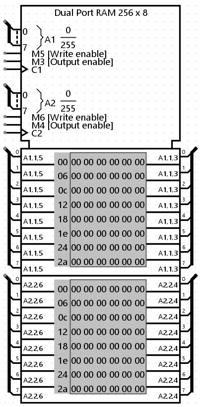
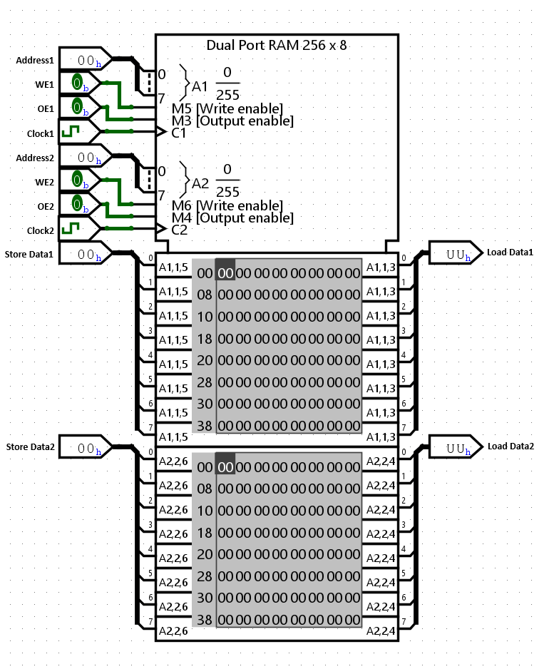
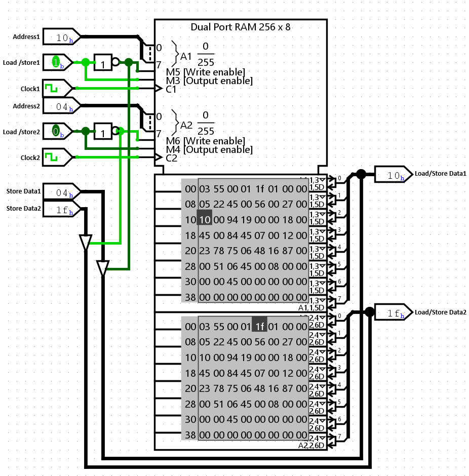

Двухпортовое ОЗУ
| Библиотека: | Память |
| Введён в: | --- |
| Внешний вид: |
 |
Поведение
Компонент Двухпортовое ОЗУ является усовершенствованной версией стандартного ОЗУ, способной хранить до 16 777 216 значений (задаётся в атрибуте Разрядность адреса), каждое из которых может включать до 32 бит (задаётся в атрибуте Разрядность данных).
Его отличительной особенностью является наличие двух полностью независимых портов доступа (Порт 1 и Порт 2). Эта архитектура позволяет двум независимым схемам одновременно производить чтение из памяти или запись в неё.
Текущие значения отображаются в самом компоненте. Адреса перечислены серым цветом слева от области отображения. Ключевая особенность — независимое управление отображением: пользователи могут прокручивать область просмотра Порта 1 и Порта 2 отдельно для отслеживания различных областей памяти.
Компонент поддерживает различные интерфейсы взаимодействия в зависимости от значения атрибута Интерфейс данных.
- Раздельные шины данных (по умолчанию)
-
Для каждого порта (1 и 2) предусмотрены отдельные контакты для входа (Din) и выхода (Dout). Этот вариант устраняет необходимость использования управляемых буферов и проще в использовании для большинства двухпортовых приложений.

- Двунаправленная шина данных
-
Для каждого порта используется один общий контакт как для загрузки, так и для сохранения данных. Это имитирует реальные микросхемы памяти, но обычно требует использования управляемого буфера для управления направлением данных, аналогично подключению стандартного ОЗУ, показанному ниже.

Контакты
Поскольку это двухпортовое ОЗУ, большинство контактов продублировано для Порта 1 и Порта 2.
- A1, A2 на левой стороне (вход, разрядность соответствует атрибуту Разрядность адреса)
- Выбирает, к какому из значений в памяти в данный момент обращается Порт 1 и Порт 2 соответственно.
- D1, D2 на левой стороне (вход, разрядность соответствует атрибуту Разрядность данных)
- Контакты ввода данных. Присутствуют, если выбран вариант «Раздельные шины данных». При запросе записи значение на этом входе сохраняется в память.
- D1, D2 на правой стороне (вход/выход или выход, разрядность соответствует атрибуту Разрядность данных)
- Контакты вывода данных. Если на входе ld присутствует 1, компонент выдает значение по текущему адресу. Если выбран вариант «Двунаправленная шина данных», эти контакты также выполняют роль входов для записи.
- str1, str2 на нижней стороне (вход, разрядность равна 1)
-
Сохранение (разрешение записи): когда на этом входе 1 или высокоимпедансное состояние (Z), тактовый импульс приведет к записи данных в память по выбранному адресу для соответствующего порта.
Примечание: если оба порта пытаются одновременно произвести запись по одному и тому же адресу, приоритет имеет Порт 2 (будет записано значение с Порта 2). - ld1, ld2 на нижней стороне (вход, разрядность равна 1)
- Загрузка (разрешение выхода): определяет, должно ли ОЗУ выдавать (на контакте D) значение по текущему адресу. Если на этом входе 0, выход переходит в высокоимпедансное состояние (Z).
- C1, C2 на нижней стороне (вход, разрядность равна 1)
- Тактовые входы: запускают операции записи. Запись обычно происходит по фронту тактового сигнала.
- clr на нижней стороне (вход, разрядность равна 1)
- Очистка: (опционально) когда на этом входе 1, все значения в памяти немедленно сбрасываются в 0.
Атрибуты
Когда компонент выбран или добавляется, цифровые клавиши от 0 до 9 меняют его атрибут «Разрядность адреса», а комбинации от Alt-0 до Alt-9 меняют его атрибут «Разрядность данных».
- Разрядность адреса
- Разрядность адреса. Количество хранимых в ОЗУ значений равно 2Разрядность_адреса.
- Разрядность данных
- Разрядность каждого отдельного значения в памяти.
- Интерфейс данных
- Определяет, использовать ли раздельные шины данных (отдельные контакты для входа/выхода) или двунаправленные шины данных (общие контакты).
- Разрешение записи байтов
- (Доступно, когда разрядность данных >= 9). Если включено, добавляет дополнительные управляющие контакты для записи в отдельные байты слова.
- Вход очистки
- Если включено, добавляет контакт асинхронного сброса (очистки) для обнуления содержимого памяти.
Поведение Инструмента «Нажатие»
См. раздел Редактирование содержимого памяти в Руководстве пользователя. Щелчок по значению внутри компонента позволяет отредактировать его. Инструмент автоматически определяет, нажимаете ли вы на область отображения Порта 1 (сверху) или Порта 2 (снизу).
Поведение Инструмента «Меню»
См. раздел Всплывающие меню и файлы в Руководстве пользователя.